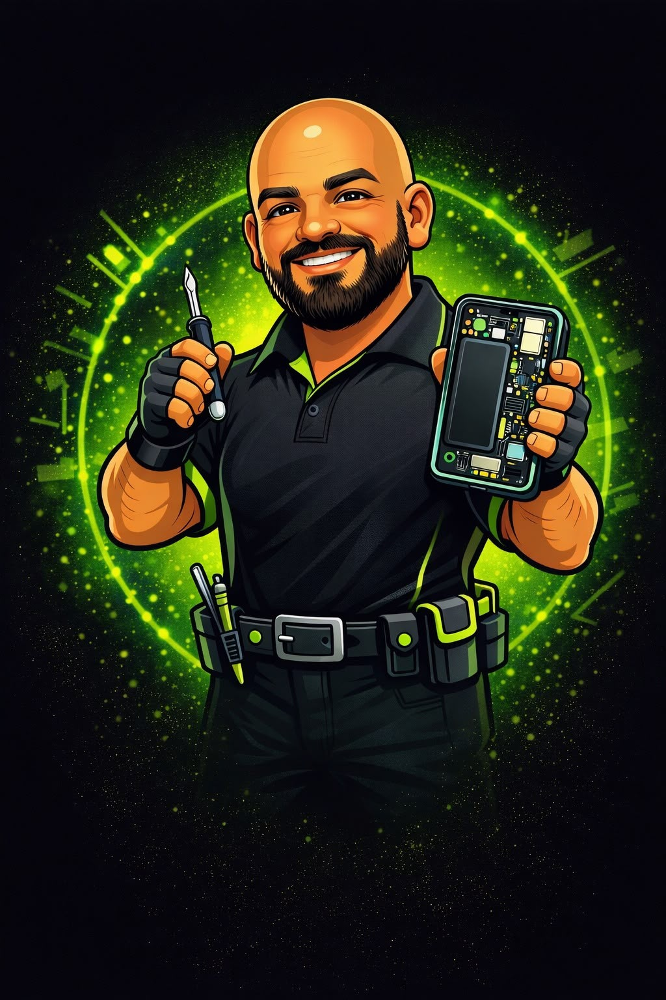
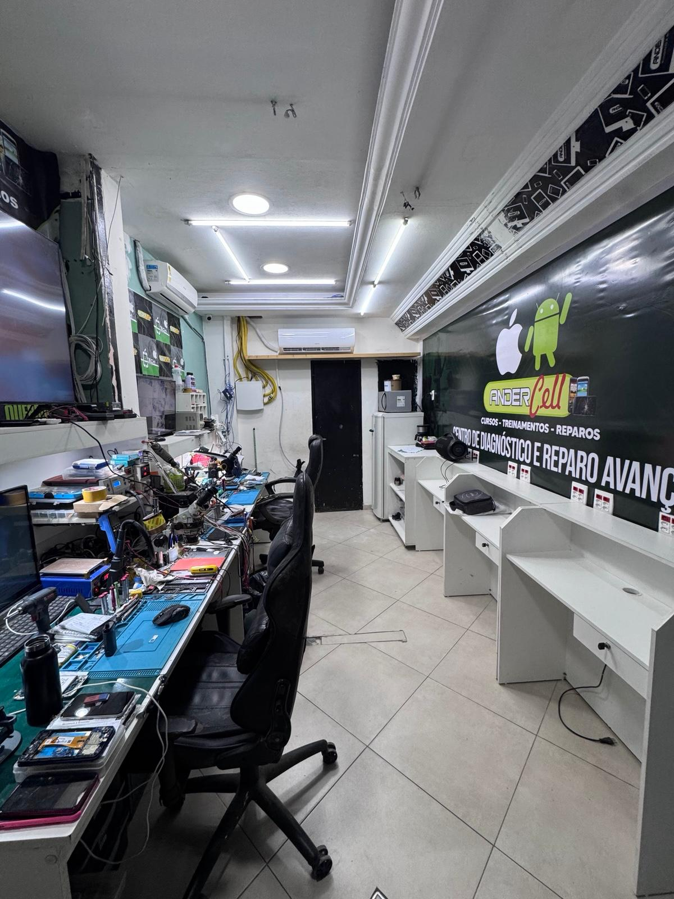
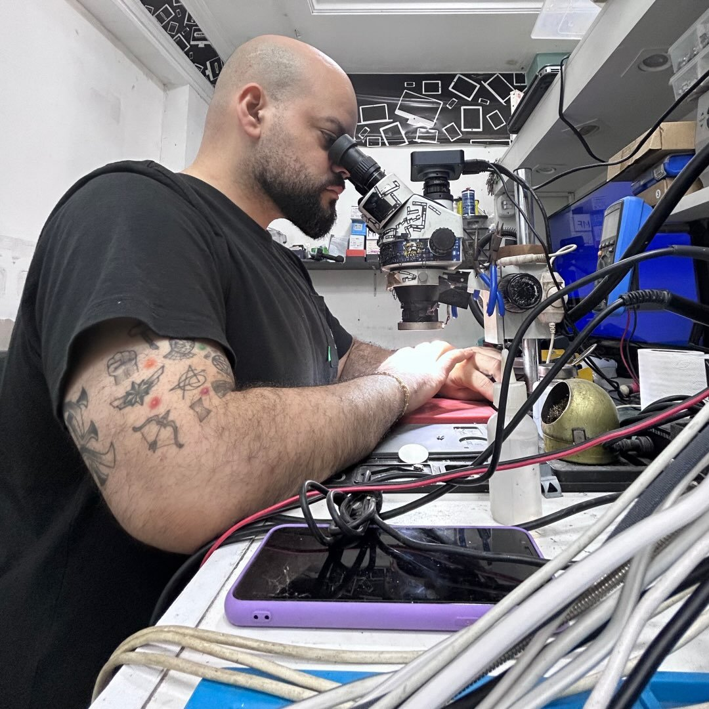

Cursos tradicionais
- Turmas grandes
- Pouco contato com o professor
- Muito conteúdo teórico
- Pouco tempo de prática
Curso presencial • Turmas reduzidas
Do zero à sua primeira experiência na bancada.
Uma imersão presencial de 40 horas para você aprender os fundamentos da manutenção diretamente na bancada.

Imersão presencial
Veja o Anderson explicar como funciona a formação e o que você vai aprender durante a imersão.
js/script.js

Para iniciantes
O curso foi desenvolvido principalmente para quem está começando do zero e quer aprender uma profissão prática, com conhecimento aplicável no dia a dia.
Você conhece as ferramentas, aprende a identificar defeitos e desenvolve uma base para começar a atuar com mais segurança.
Ver conteúdo do curso →O grande diferencial
O aprendizado acontece diretamente na bancada.
Cursos tradicionais
Experiência Andercell
Uma semana de prática
Existe possibilidade de flexibilização da agenda para aulas uma ou duas vezes por semana, mediante combinação.
Cronograma
Fundamentos e introdução à manutenção.
Desmontagem, montagem e componentes.
Trocas e manutenção.
Diagnóstico e software.
Solda e introdução à microssoldagem.
Conteúdo programático
Técnicas para desmontar e montar aparelhos de maneira segura.
Telas, conectores, baterias, botões e componentes essenciais.
Técnicas voltadas à substituição de conectores, botões e outros componentes.
Fonte assimétrica, separadora, multímetro e ferramentas de apoio.
Noções básicas de software e formatação de celulares.
Fundamentos para investigar falhas de carga, imagem, bateria e inicialização.
Conheça conceitos relacionados à substituição de componentes diretamente na placa, incluindo FPC.
Tudo para começar
Você não precisa comprar ferramentas para fazer o curso. Elas são disponibilizadas durante as aulas.

Seu instrutor
Técnico formado em Eletrônica pela FAETEC, no Rio de Janeiro. Atua profissionalmente com manutenção de celulares há 10 anos e é especialista no reparo de placas de dispositivos iPhone e Android.
Proprietário da Andercell, empresa com aproximadamente 12 anos de atuação em manutenção e acessórios, também possui experiência como professor de manutenção de celulares.
Para quem é
Transparência
O objetivo é ensinar uma habilidade prática, fornecer conhecimento e construir uma base para que você possa buscar suas próprias oportunidades na área.
Localização
Rua Alberto Sampaio, nº 40 — Santa Rita
Nova Iguaçu/RJ • Ao lado da Farmácia Fama da Papelândia.
Vagas limitadas
As turmas ocorrem de forma individual ou em dupla, permitindo acompanhamento muito mais próximo durante o aprendizado.
Investimento
Dúvidas frequentes
Sua jornada começa agora
Aprenda manutenção de celulares na prática, diretamente na bancada e com acompanhamento próximo.